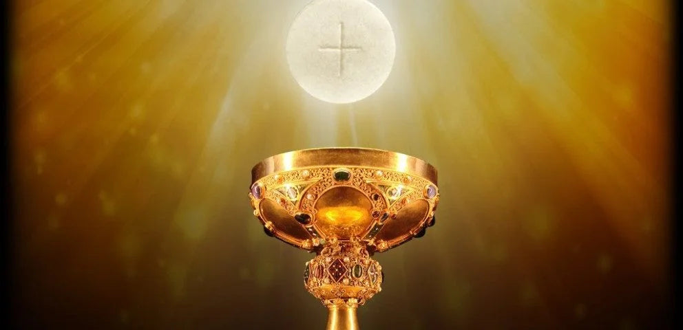
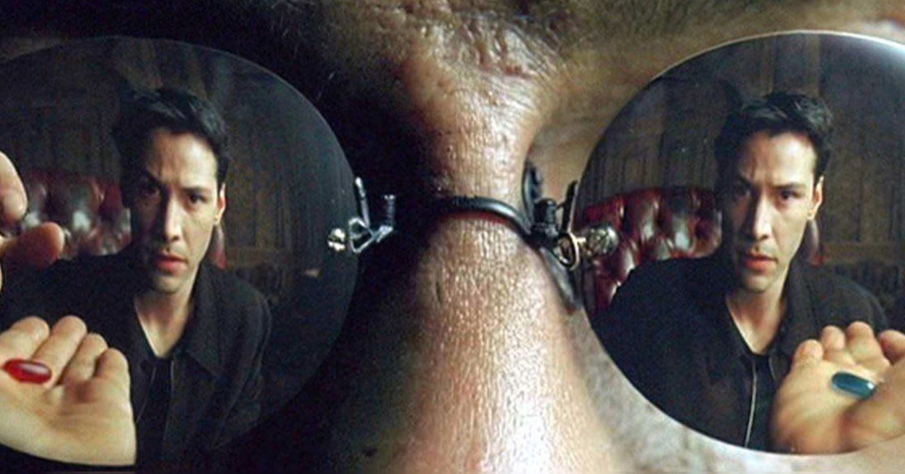

Explore Catholicism
Table of Contents
- 1. Introduction
- 2. Truth
- 3. Sola Scriptura
- 4. Saved by Faith Alone?
- 5. The Mass: an Overview
- 6. The Eucharist
- 7. Objections
- 8. Pro-Life
- 9. Resources
1. Introduction
I am a former Evangelical Christian turned Catholic.
How can someone go from a loving, personal relationship with Christ as an Evangelical Christian to a loving relationship with Christ as a Catholic? Many Protestants will say that is not possible, because the Catholic Church does not teach the true Gospel of Jesus Christ. Nonetheless, this has been the journey of not just myself, but many other Catholic converts from various forms of Protestantism or Anglicanism, not to mention other faiths, as well. This site is about the matters of faith and reason that led me to Catholicism.
I never would have been open to exploring Catholicism if I had found no lack in Protestant teachings. Indeed, questions arose for which I found no good answer in and among my Protestant friends or within the Protestant world. The two most significant questions for me were as follows:
- If the Catholic Church gave us the Bible, why shouldn't the Catholic Church be able to authoritatively interpret the Bible? As I learned more about how the Bible came about, I saw how early Church councils defined the contents of the Bible. It seemed to me that to draw the boundaries on the contents of the Bible is a greater power than the ability to interpret the Bible, for if the Church finds some writing objectionable, that very Church that compiled the Scriptures now called the Bible should have defined that objectionable text out of the Bible.
- Was the Eucharist truly the Body and the Blood of Jesus Christ Jesus taught this in John 6. Ignatius of Antioch, a student of John martyred within 20 year of St. John's own death, also seemed to think so. So did the preponderance of Christian writers through the centuries. While my own Evangelical denomination teaches that elements of communion are merely symbolic, and many of my former fellow Christian believers recoiled at the thought of Christ being truly present in the bread and grape juice, I was startled to learn that even Martin Luther himself thought that Christ was truly present in the Eucharist; and John Calvin taught that Holy Communion was much more than a symbol. The symbolist view was historically considered heretical by Christians, until it swept through the Protestant movement in the 1520s. At this time, Ulrich Zwingli promoted a symbolist view in opposition to Martin Luther, who advocated for the Real Presence. Did the first 15 centuries of Christians get it wrong?
As I explored these questions and found considerable evidence to think that the Catholic Church has the correct position here, I became unsettled in my view, which had been taught to me in my Protestant upbringing. I was forced to learn more.
In the end, there is only one reason to become Catholic: because the teachings of the Catholic Church are true. If the teachings of the Catholic Church are not true, then Catholicism is not worth our time. However, I believe that its teachings hold up under scrutiny, indeed.
2. Truth
It is helpful to begin with the concept of truth, because if there is no truth, then there is no point in discussion. We show first that there must be truth; and second, that truth is absolute. Along the way, we pick up an important tool, the principle of non-contradiction, which we can use to demonstrate that some ideas (or propositions) are invalid and must be rejected.
2.1. There must be Truth
An important starting point is truth. Truth must exist, and it must be absolute. If not, then why do we even spend time talking, discussing, and debating? Why not allow everyone to go off on their own and manifest his or her own reality as he or she sees fit? Clearly this is absurd.
We can more rigorously conclude that there must be truth if we start with the another antithetical proposition, which we call proposition A:
Proposition A
There is no truth.
The problem with proposition A arises when we ask, "Is A true?" If the response is yes, then a truth exists, and A becomes false. This is a contradiction, and it cannot possibly be valid according to the rules of logic, namely the principle of non-contradiction.
2.1.1. The Principle of Non-contradiction
The principle of non-contradiction is a law of logic:
The Principle of Non-Contradiction
A proposition cannot be both true and false at the same time in the same respect.
This is foundational to logical reasoning and coherent thought.
The principle–sometimes called a law–of non-contradiction tells us that there is no truth is invalid, and it must be rejected. If we reject there is no truth, then we are left with the principle that there must be truth.
This is comforting when we remember Jesus Christ claimed to be the Way, the Truth, and the Light. The truth is something foundational and concrete.
2.2. Truth is Absolute
Let's try another statement, proposition B: there is no absolute truth. We can explore the validity of B in much the same way as we did for A. We can ask if B is absolutely true. If it is true–as so many who would invoke proposition B would like us to believe–, then B has negated itself, again becoming absurd and invalid. Now, not only can we conclude that there must be truth, but also that truth is absolute.
2.3. Conclusion
In addition to having shown that there must be truth and truth must be absolute, we also have acquired the principle of non-contradiction. This is very important, because it allows us to identify and reject ideas which are invalid based on contradictions within the ideas themselves. I believe this is also a tool for theology: something cannot be both true and false at the same time in the realm of faith. Such a theological proposition would contradict itself, and it would be invalid.
2.4. Additional Resources
2.4.1. More Information on the Principle of Non-Contradiction
For more information on this topic, you may wish to watch or listen to the following:
3. Sola Scriptura
3.1. Authority: Bible, Church, or Both?
I was quite happy to be an Evangelical Christian, and I certainly believed that the Bible was the only infallible authority I needed. After all, it was through the Scriptures prayer, and the testimony of a friend that I had my first powerful encounter with God. What more did I need?
My travels had me in different Christian denominations. My start was in the Assemblies of God, where I learned the basics of Who God is, and of His great love for us. Then, I transitioned to Calvary Chapel, where I heard amazing expository teaching with beautiful application of both Old Testament and New Testament scriptures. In my military time and during engineering graduate school, I also tried an Evangelical Presbyterian church, a few non-denominationa churches, a Southern Baptist Church, a Missionary Church, and an Evangelical Free church.
At a Presbyterian church, I remember sitting in a Sunday school class, in which a young woman asked the pastor, "Pastor, I have a question I don't know how to handle. It came from a Catholic friend, who asked, 'If the Catholic Church gave us the Bible, why shouldn't the Catholic Church be able to interpret the Bible?'"
I do not recall the pastor's example. It was not nearly as memorable or as cogent as the young woman's question. I let the question go, and I didn't think about it for about 4-5 years.
As time went on, I thought about this on occasion. I remember concluding to myself that the ability to define Scriptures is greater than the ability to interpret it. For example, if you don't like an undeniable interpretation of a certain passage, why cannonize it as Scripture in the first place?
Later, I learned that the process by which the Bible developed. It is not as clear-cut as many would like it to be. This process highlights the need for an additional authority aside from the Bible to even have a Bible. Since the Bible doesn't define itself, to recognize a certain set of scriptures as the Bible requrires an additional authority. Additionally, from Christian antiquity to the modern age, different Christian traditions follow different set of books as their sacred scriptures: there is no uniform agreement about what is the Bible. Any Christian who says "I have the true, infallible Bible in my hand, and the others are incorrect," must explain how they know this is the correct Bible, and how they are infallibly sure. They will no doubt fall back on some authority that says this is the correct Bible, not that one. Furthermore, if that authority has infallibly identified the correct Bible, then we have an infallible authority apart from the Bible. Thus, the Bible cannot be the only infallible authority for Christians.
3.2. The Canon of Scripture and the Necessity of Authority
3.2.1. Introduction
The doctrine of sola scriptura is often understood as the belief that the Bible is the only infallible authority for Christian faith and practice. However, this position faces a significant challenge: in order to know what constitutes the Bible, an external authority is required to delineate the contents of Scripture. The Bible itself does not provide its own table of contents. This means that, before one can appeal to the Bible as the sole infallible authority, one must first rely on an authority to define what "the Bible" actually is.
3.2.2. The Role of Authority in Defining Scripture: A Challenge to Sola Scriptura
The doctrine of sola scriptura is often understood as the belief that the Bible is the only infallible authority for Christian faith and practice. However, this position is problematic because it presumes that the Bible is self-defining—yet, the Bible does not contain its own table of contents. Instead, the contents of Scripture were determined by an external authority. The historical development of the Christian canon demonstrates that the Church played a necessary and authoritative role in recognizing and defining Scripture.
If we require another infallible authority to know what Scriptures are included in the Bible, then the Bible cannot be the sole infallible authority for Christian life and worship.
- The Development of the Christian Scriptures
The Bible as we know it today did not appear as a single, bound volume in the early Church. Instead, the books of both the Old Testament and New Testament were compiled over time, with different traditions preserving different sets of books. The process of recognizing and defining Scripture was a complex, authoritative decision rather than an automatic or universally agreed-upon process.
- The Old Testament consists of writings compiled over centuries, with different groups accepting different books.
- The New Testament was written in the first century, but disputes over which books were authoritative continued for centuries.
- Church councils (such as Rome AD 382, Hippo AD 393, Carthage AD 397) played a key role in affirming the New Testament canon.
- The Protestant Reformation in the 16th century led to a rejection of certain Old Testament books previously accepted by Christians.
The very fact that Christians today accept different canons highlights the need for an external authority to determine which books belong in Scripture.
- Different Canons in Use Today
Various Christian traditions use different versions of the Bible. The table below illustrates these differences:
Tradition Old Testament Canon New Testament Canon Established Jewish (Tanakh) 24 books (same content as Protestant 39 books) N/A c. 3rd–2nd century BC (Torah, Prophets), c. AD 90–200 (Writings) Protestant 39 books (Masoretic Text), excludes Deuterocanonicals 27 books 16th century (Reformation) Catholic 46 books (Septuagint tradition, including Deuterocanonicals) 27 books c. AD 382 (Council of Rome, reaffirmed in later councils) Greek Orthodox 49 books (Septuagint, including additional books like 1 Esdras, Psalm 151, 3 Maccabees) 27 books c. AD 692 (Quinisext Council, based on earlier traditions) Russian Orthodox 50 books (Greek Orthodox canon + 2 Esdras in some traditions) 27 books c. AD 692 (Quinisext Council, later Russian tradition) Ethiopian Orthodox 81 books (Septuagint + Enoch, Jubilees, Meqabyan, others) 27 books c. 4th century AD (Aksumite Church tradition) As this table shows, different Christian traditions have differing Old Testament canons. If sola scriptura were true, how would a believer determine which canon to follow without appealing to an external authority?
- The Deuterocanonical Books and the Authority of the Church
The Deuterocanonical books serve as a key example of this issue. These books were part of the Septuagint (LXX), the Greek Old Testament widely used by early Christians, but they were later rejected by Protestant Reformers. They are accepted as Scripture by Catholics and Orthodox Christians, but not by most Protestants.
Here is a list of these books:
Book Included in Notes Tobit Catholic, Orthodox Narrative about piety and divine intervention Judith Catholic, Orthodox Story of a Jewish heroine defeating an enemy general Wisdom (of Solomon) Catholic, Orthodox Philosophical and theological reflections on wisdom Sirach (Ecclesiasticus) Catholic, Orthodox Wisdom literature, similar to Proverbs Baruch Catholic, Orthodox Includes a letter attributed to Jeremiah 1 Maccabees Catholic, Orthodox History of the Jewish revolt against Hellenistic rulers 2 Maccabees Catholic, Orthodox Theological and historical account of Jewish martyrdom and resurrection beliefs Additions to Daniel Catholic, Orthodox Includes The Prayer of Azariah, Susanna, and Bel and the Dragon Additions to Esther Catholic, Orthodox Expands on the Hebrew version of Esther with more prayers and details Many Protestant arguments claim that the Church merely "recognized" which books were inspired, rather than defining them. However, this does not solve the problem of authority:
- The act of recognition itself requires a group or council to make authoritative judgments.
- Recognition relies on criteria such as apostolic authorship, yet these criteria were **set by an authority**—not by Scripture itself.
- The different canons in use today prove that the identification of inspired Scripture was not self-evident, but required a teaching authority.
If a believer chooses a particular canon of Scripture, they are necessarily submitting to the authority that defined that canon. If they claim their canon is infallibly correct, then they implicitly grant infallibility to the authority that established that canon.
- Conclusion: The Limits of Sola Scriptura
Given the historical development of the canon, the role of Church councils, and the differences between Christian Bibles today, sola scriptura as an absolute doctrine is untenable. The Bible is not a self-authenticating authority; its very contents were **established by an external authority**—the Church.
This means that:
- The canon of Scripture itself is an extra-biblical tradition.
- The process of recognizing Scripture requires an authority outside of Scripture.
- The differences in Christian canons today prove that an authoritative Church is necessary to define Scripture.
Thus, the claim that "the Bible alone is the only infallible authority" is self-defeating. Without an infallible Church to define what belongs in the Bible, one cannot even know which Bible to follow. The authority of the Church is inescapable in the formation, recognition, and interpretation of Scripture.
3.3. The Development of the Christian Scriptures - More Details
3.3.1. The Old Testament Canon
The Christian Old Testament originates from the Hebrew Scriptures, but its structure, order, and content vary among different Christian traditions.
- Jewish Scriptures and Canonization
- The Torah (Pentateuch) was likely compiled between the 10th and 5th centuries BC.
- The Septuagint (LXX), a Greek translation of the Hebrew Scriptures (3rd–1st century BC), included books not found in the later Jewish Masoretic Text (e.g., Tobit, Judith, Wisdom, Sirach, Baruch, 1–2 Maccabees, additional sections in Esther and Daniel).
- Jewish canonization (c. AD 90–200) led to the rejection of these additional books, favoring the Hebrew texts.
- Christian Adoption of the Old Testament
- Early Christians largely used the Septuagint.
- Some Church Fathers (e.g., Origen, Augustine) accepted the Deuterocanonical books, while others (e.g., Jerome) preferred the Hebrew canon.
- The Council of Trent (1546) reaffirmed the Catholic canon, including the Deuterocanonical books, while Protestants rejected them.
- The Deuterocanonical Books
The Deuterocanonical books are books included in the Old Testament by the Catholic, Eastern Orthodox, and some Oriental Orthodox churches but excluded from the Jewish Tanakh and most Protestant Bibles. These books are considered canonical by these churches but are referred to as Apocrypha by most Protestant traditions.
- List of Deuterocanonical Books
Here are the books classified as Deuterocanonical:
Book Included in Notes Tobit Catholic, Orthodox Narrative about piety and divine intervention Judith Catholic, Orthodox Story of a Jewish heroine defeating an enemy general Wisdom (of Solomon) Catholic, Orthodox Philosophical and theological reflections on wisdom Sirach (Ecclesiasticus) Catholic, Orthodox Wisdom literature, similar to Proverbs Baruch Catholic, Orthodox Includes a letter attributed to Jeremiah 1 Maccabees Catholic, Orthodox History of the Jewish revolt against Hellenistic rulers 2 Maccabees Catholic, Orthodox Theological and historical account of Jewish martyrdom and resurrection beliefs Additions to Daniel Catholic, Orthodox Includes The Prayer of Azariah, Susanna, and Bel and the Dragon Additions to Esther Catholic, Orthodox Expands on the Hebrew version of Esther with more prayers and details - Additional Books in the Orthodox Canon
Eastern Orthodox and Oriental Orthodox traditions accept additional books beyond the Catholic Deuterocanonical books:
- 1 Esdras (Greek Orthodox, Russian Orthodox) – Alternative version of Ezra
- 3 Maccabees (Greek Orthodox, Russian Orthodox) – A different historical account from 1 & 2 Maccabees
- Psalm 151 (Greek Orthodox, Russian Orthodox) – An additional psalm attributed to David
- 2 Esdras (sometimes called 4 Esdras) (Russian Orthodox in some traditions) – Apocalyptic and prophetic work
- Prayer of Manasseh (Greek Orthodox, Russian Orthodox) – A penitential prayer of King Manasseh
- Unique to Ethiopian Orthodox Canon
The Ethiopian Orthodox Church has the widest biblical canon, including all the above books plus additional writings such as:
- Enoch (1 Enoch) – An ancient Jewish apocalyptic text, quoted in the New Testament (Jude 14-15)
- Jubilees – Retelling of Genesis with additional details
- Meqabyan (1, 2, and 3 Maccabees in Ethiopian tradition) – Different from the Greek Maccabees
- Testament of Abraham, Testament of Isaac, Testament of Jacob – Additional patriarchal writings
- Why Are These Books Controversial?
- Jewish View: The Hebrew Bible (Tanakh) does not include these books. They were mostly written in Greek, not Hebrew, and were excluded from the Rabbinic canon (finalized around AD 90–200).
- Protestant View: The Reformation (16th century) removed the Deuterocanonical books from the Old Testament, following the Jewish canon rather than the Septuagint (LXX), which was the Old Testament used by early Christians. Martin Luther and later Reformers considered them useful but not divinely inspired.
- Catholic & Orthodox View: The early Church used the Septuagint (LXX), a Greek translation of the Old Testament, which included these books. Church councils (such as Rome AD 382, Hippo AD 393, Carthage AD 397) affirmed their use. The Council of Trent (AD 1546) formally declared them canonical for the Catholic Church in response to Protestant rejection.
3.3.2. The New Testament Canon
- Formation of the New Testament
- Apostolic writings (AD 50–100) were gradually collected and recognized.
- By AD 150, the four Gospels, Acts, and Paul’s letters were widely accepted.
- Athanasius' Festal Letter (AD 367) listed the 27 books of the New Testament.
- The Councils of Hippo (AD 393) and Carthage (AD 397, 419) reaffirmed the canon.
- The Orthodox Church accepted a similar canon but took longer to formalize it.
- Middle Ages and Reformation
- The canon remained stable in Catholic and Orthodox traditions.
- The Protestant Reformation led to the rejection of the Deuterocanonical books.
3.3.3. Differences in Biblical Canons Today
From Christian antiquity to the modern day, there has been no uniform agreement on what is the correct list of Scriptures. The following table higlights this fact:
| Tradition | Old Testament | New Testament | Canon Established |
|---|---|---|---|
| Jewish (Tanakh) | 24 books (same content as Protestant 39 books) | N/A | c. 3rd–2nd century BC (Torah, Prophets), c. AD 90–200 (Writings) |
| Protestant | 39 books (Masoretic Text), rejects Deuterocanonicals | 27 books | 16th century (Reformation) |
| Catholic | 46 books (Septuagint + Deuterocanonicals) | 27 books | c. AD 382 (Council of Rome, reaffirmed in later councils) |
| Greek Orthodox | 49 books (adds 1 Esdras, Psalm 151, 3 Maccabees) | 27 books | c. AD 692 (Quinisext Council, based on earlier traditions) |
| Russian Orthodox | 50 books (adds 2 Esdras in some traditions) | 27 books | c. AD 692 (Quinisext Council, later Russian tradition) |
| Ethiopian Orthodox | 81 books (adds Enoch, Jubilees, Meqabyan, others) | 27 books | c. 4th century AD (Aksumite Church tradition) |
This table gives us several interesting insights:
- The New Testament writers, writing within 50 AD - 100 AD, used and quoted from the Septuagint, which includes the texts later rejected in the development of the Tanakh (90 AD - 200 AD)
3.3.4. The Problem for Sola Scriptura
Given these historical realities, sola scriptura faces a serious problem: if
the Bible is the only infallible authority, how does one determine what
constitutes "the Bible" without appealing to an external authority?
- 1. The Necessity of an External Authority
Without the Church's authority, one would have no objective way to know which books belong in the canon.
The early Church played a central role in collecting, preserving, and recognizing inspired writings.
- 2. The "Recognition" Argument Does Not Solve the Issue
Some argue that the Church does not define Scripture but merely recognizes inspired writings.
However, recognition itself is an act of authority: it either relies on a group (e.g., bishops, Jewish scholars) or on a test (e.g., apostolic authorship).
If a test is used, then we depend on the authority of those who established that test.
- 3. The Existence of Differing Canons Highlights the Problem
If the Bible were self-evident in its contents, there would be no dispute over which books belong.
Yet, various Christian traditions hold different canons, meaning believers submit to an external authority in choosing the "correct" canon.
- 4. The Infallibility Problem
If a believer holds that their canon is infallibly correct, then the authority that defined that canon must also be infallible.
This contradicts the claim that the Bible alone is the only infallible authority.
Conclusion
The doctrine of
sola scriptura, understood as the Bible being the sole infallible authority, is self-refuting. The very act of defining the Bible's contents requires an external authority. Since different Christian traditions accept different canons, the believer must ultimately submit to an authority beyond Scripture to determine what counts as Scripture in the first place. Thus, the role of the Church in establishing and identifying the Scriptures is indispensable, demonstrating that an authoritative, living tradition is necessary alongside the written Word of God.
3.4. Links
3.4.1. Does Everything Have to be in the Bible for us to Believe it?
3.4.2. The Scriptures and the Role of the Early Church
Jimmy Akin discusses Wesley Huff's presentation on the Old Testament.
Dr. John Bergsma, a former Dutch Calvinist pastor, discuss when he came to recognize that sola scriptura was impossible.
Dr. David Anders discusses the historical context of the Protestant Reformation. Luther's reformation was an outgrowth of prior movements in the Catholic Church. Lutheran ideas landed in the laity in a way that was different from the way he intended.
4. Saved by Faith Alone?
4.1. Introduction
A dogma central to Luther's Protestant reformation is summarized by the phrase sola fide, which is translated "by faith alone." This encapsulates the idea that man is saved or justified in God's sight by faith alone.
Thus, it is important to ask the question: can man be saved by faith alone?
If you wish, you may view a video I made on this very topic:
My conditioning to believe in sola fide was one of the major obstacles for me to embracing Catholicism, even though I was already persuaded that sola scriptura was not defensible, and I favored the Orthodox teaching of the Real Presence of Christ in the Eucharist over the symbolist interpretation of some Protestant groups.
4.2. Evidence For Sola Fide
Many proponents of sola fide say that the Bible plainly states that man is saved by faith alone in Ephesians 2:8-10:
For by grace you have been saved through faith, and this is not your own doing; it is the gift of God— not the result of works, so that no one may boast (Ephesians 2:8-10, NRSVCE)
This verse excludes works as a means of salvation, leaving only grace and faith as causes of salvation. Thus, a sola-fide adherent will reason, no works done by a human can earn their salvation, and only faith can save.
Furthermore, additional verses support the exclusion of works as a means of salvation:
-
For “no human being will be justified in his sight” by deeds prescribed by the law, for through the law comes the knowledge of sin.
-
Then what becomes of boasting? It is excluded. By what law? By that of works? No, but by the law of faith.
-
yet we know that a person is justified not by the works of the law but through faith in Jesus Christ. And we have come to believe in Christ Jesus, so that we might be justified by faith in Christ, and not by doing the works of the law, because no one will be justified by the works of the law.
-
Well then, does God supply you with the Spirit and work miracles among you by your doing the works of the law, or by your believing what you heard?
-
For all who rely on the works of the law are under a curse; for it is written, “Cursed is everyone who does not observe and obey all the things written in the book of the law.” Now it is evident that no one is justified before God by the law; for “The one who is righteous will live by faith.”[a] 12 But the law does not rest on faith; on the contrary, “Whoever does the works of the law will live by them.”
Because of verses such as these, proponents of sola fide support the dogma that man is justified not by works, but rather by faith alone. Works are insufficient in this view to justify humans–that is, to qualify us for salvation and an afterlife in the loving presence of God.
Eternal Security or the Perseverance of the Saints
Read more ...
Sola Fide also leads to another dogma called eternal security or the perseverance of the saints. Eternal security follows from sola fide, for since one's works cannot contrubte to salvation, they cannot imperil one's salvation. However, even in the Protestant world, there is poor agreement about the perseverance of the saints: Calvinists and Baptitsts tend toward the perseverance of the saints, but numerous Evangelical denominations follow the Arminian tradition, which teaches that a Christian may lose his or her salvation. From this, we can deduce that there is no Scripture that irrevocably establishes eternal security, or the debate would be laid to rest.
Furthermore, several passages of Scripture suggest that one can fall away from salvation. At the very least, these Scriptures should indicate that eternal security is not such a secure doctrine. Notable Scripture passages include:
Matthew 13:1-23 (RSVCE): Here, Jesus gives the Parable of the Sower:
3 Then he told them many things in parables, saying: “A farmer went out to sow his seed. 4 As he was scattering the seed, some fell along the path, and the birds came and ate it up. 5 Some fell on rocky places, where it did not have much soil. It sprang up quickly, because the soil was shallow. 6 But when the sun came up, the plants were scorched, and they withered because they had no root. 7 Other seed fell among thorns, which grew up and choked the plants. 8 Still other seed fell on good soil, where it produced a crop—a hundred, sixty or thirty times what was sown. 9 Whoever has ears, let them hear.”
This left his audience, including his disciples puzzled. Later, He explained it to His disciples:
18 “Listen then to what the parable of the sower means: 19 When anyone hears the message about the kingdom and does not understand it, the evil one comes and snatches away what was sown in their heart. This is the seed sown along the path. 20 The seed falling on rocky ground refers to someone who hears the word and at once receives it with joy. 21 But since they have no root, they last only a short time. When trouble or persecution comes because of the word, they quickly fall away. 22 The seed falling among the thorns refers to someone who hears the word, but the worries of this life and the deceitfulness of wealth choke the word, making it unfruitful. 23 But the seed falling on good soil refers to someone who hears the word and understands it. This is the one who produces a crop, yielding a hundred, sixty or thirty times what was sown.”
For clarity, we pair each class of seed with the type of human heart:
Seed along the path illustrates people who do not grasp the message about the kingdom of God.
Parable text:
4 As he was scattering the seed, some fell along the path, and the birds came and ate it up.
Explanation:
19 When anyone hears the message about the kingdom and does not understand it, the evil one comes and snatches away what was sown in their heart. This is the seed sown along the path.
Seed in rocky places illustrates people who receive the message, but do not persevere in it.
Parable text:
5 Some fell on rocky places, where it did not have much soil. It sprang up quickly, because the soil was shallow. 6 But when the sun came up, the plants were scorched, and they withered because they had no root.
Explanation:
20 The seed falling on rocky ground refers to someone who hears the word and at once receives it with joy. 21 But since they have no root, they last only a short time. When trouble or persecution comes because of the word, they quickly fall away.
This raises some interesting questions:
- In the parable, "It sprang up quickly" is "someone who hears the word." Did the person experience the life of Christ and then fall away? The defender of eternal security would say they never were a believer in the first place, but is that a sound interpretation? The defensor of eternal security will say that it is sound, because it supports the desired narrative and fits in with the interpretive lens of eternal security. However, it appears that in contrast to the individual who simply did not understand the message, this person actually did, and this person bore evidence of the new life in Christ; and that this person failed to persevere.
- What does "fall away" mean? The eternal security ally would say that such a person only looked like a genuine beleiver, but really wasn't in the first place. But, how can one "fall away" if they were not first connected to Christ in the first place?
The seed on rocky ground seems to represent individuals who fall away from their salvation due to external pressures (trouble or persecution). For simplicity, we may call this the weak Christian, since he cannot endure the trouble or persecution.
Seed falling among thorns is paired with individuals who fail to persevere due to a temporal, worldly perspective obscuring their perspective on things eternal.
Parable text:
7 Other seed fell among thorns, which grew up and choked the plants.
Explanation:
22 The seed falling among the thorns refers to someone who hears the word, but the worries of this life and the deceitfulness of wealth choke the word, making it unfruitful.
Like the weak Christian, this, worldly Christian exhibits the new life, but fails to persevere. This new life is choked out (it could not be choked out if it was not alive in the first place) because this new believer is distracted from things eternal by things of the world.
Seed falling on good soil represents fruitful Christians.
Parable text:
8 Still other seed fell on good soil, where it produced a crop—a hundred, sixty or thirty times what was sown. 9 Whoever has ears, let them hear.”
Explanation:
23 But the seed falling on good soil refers to someone who hears the word and understands it. This is the one who produces a crop, yielding a hundred, sixty or thirty times what was sown.”
The defender of eternal security may suggest that since the fruitful Christian is described as one who hears and understands the message, the weak Christian (group 2) and the worldly Christian (group 3) did not understand the message and were not truly Christian in the first place. However, since Christ spoke of this seed germinating and groups 2 and 3 also hearing, they have more in common with the fruitful Christian (group 4) than group 1 (those who did not understand). It is more likely that groups 2 and 3 really were Christians, and they understood the message, but not to the same extent that the Christians of group 4 did. The fruitful Christians understood that Christ is their very life, and they held on to the end; but groups 2 and 3 did not fully grasp this, and they were persuaed by difficult external circumstances or a misguided heart that to abandon Christ would be better than to endure.
The defender of eternal security may interpret this to be a warning against fruitlessness rather than an indication about the loss of one's salvation. Nonetheless, this indicates an individual can fall away from Christ.
The next passage raises the stakes and gives a firm warning against fruitlessness, indicating dire consequences for fruitlessness because of a failure to abide in Christ.
-
15 “I am the true vine, and my Father is the vinedresser. 2 Every branch of mine that bears no fruit, he takes away, and every branch that does bear fruit he prunes, that it may bear more fruit. 3 You are already made clean by the word which I have spoken to you. 4 Abide in me, and I in you. As the branch cannot bear fruit by itself, unless it abides in the vine, neither can you, unless you abide in me. 5 I am the vine, you are the branches. He who abides in me, and I in him, he it is that bears much fruit, for apart from me you can do nothing. 6 If a man does not abide in me, he is cast forth as a branch and withers; and the branches are gathered, thrown into the fire and burned. 7 If you abide in me, and my words abide in you, ask whatever you will, and it shall be done for you. 8 By this my Father is glorified, that you bear much fruit, and so prove to be my disciples.
This passage is taken from St. John's narrative of the Last Supper, and Jesus' disciples were present. These were His inner circle, the Twelve Apostles. Jesus conditions the bearing of fruit with abiding in Him, and He commands the Twelve to abide in Him. Several interesting questions arise here:
- Why would Jesus command the Twelve to abide in Him if it were impossible for them to stop abiding in Him?
- Why does Christ warn about not abiding in Him if it were impossible to stop abiding in Him?
- Furthermore, why would Jesus warn about the consequences of not abiding in Him if it were impossible to stop abiding in Him?
- What are the consequences of failing to abide in Jesus?
- What does it mean to wither away?
- How can a branch wither if it is not first a healthy part of the vine?
- What does it mean for a withered branch to be burned in fire?
-
3 As he sat on the Mount of Olives, the disciples came to him privately, saying, “Tell us, when will this be, and what will be the sign of your coming and of the close of the age?” 4 And Jesus answered them, “*Take heed that no one leads you astray*. 5 For many will come in my name, saying, ‘I am the Christ,’ and they will lead many astray. 6 And you will hear of wars and rumors of wars; see that you are not alarmed; for this must take place, but the end is not yet. 7 For nation will rise against nation, and kingdom against kingdom, and there will be famines and earthquakes in various places: 8 all this is but the beginning of the sufferings.
9 “Then they will deliver you up to tribulation, and put you to death; and you will be hated by all nations for my name’s sake. 10 And then many will fall away, and betray one another, and hate one another. 11 And many false prophets will arise and lead many astray. 12 And because wickedness is multiplied, most men’s love will grow cold. 13 But he who endures to the end will be saved.
Some key questions arise here:
- Why would Jesus have warned His disciples of being led astray if that were not possible?
- Why would Christ have been warning about falling away if that were not possible?
- What does falling away mean? How can one fall away if they were never joined to Christ in the first place?
- Does verse 13 inicate that it is possible to fail to endure to the end? This does not say he who is saved endures to the end (i.e., that salvation determines endurace as in the Calvinist or Baptist undrstanding), but rather that endurace merits salvation.
Hebrews 6:4-7 (RSVCE). The writer describes individuals who have truly tasted the heavenly gift and partaken of the Holy Spirit, and then fall away.
4 For it is impossible to restore again to repentance those who have once been enlightened, who have tasted the heavenly gift, and have become partakers of the Holy Spirit, 5 and have tasted the goodness of the word of God and the powers of the age to come, 6 if they then commit apostasy, since they crucify the Son of God on their own account and hold him up to contempt. 7 For land which has drunk the rain that often falls upon it, and brings forth vegetation useful to those for whose sake it is cultivated, receives a blessing from God.
This is a very interesting and powerful verse, for it speaks of those cannot be restored after having become partakers of the Holy Spirit, having tasted of the goodness of God and having come to know the powers of the age to come.
Proponents of eternal security would attempt to argue that these individuals only appeared to be saved, but it was the case that they were never saved in the first place. Some have even suggested to me in dialog that these people were not enlightened by the Holy Spirit, despite the fact that the text says they were enlightened and partakers of the Holy Spirit before needing an (impossible) restoration. It would be pointless to talk of restoration if the person had not initially been in a state of grace.
Some have responded to this verse by saying that it's complex, unclear, and can be interpreted in many ways. This response is not adequate, because it does not suggest an interpretation that supports eternal security, but only attempts to obscure a verse that reads in a simple way to cast significant doubt upon eternal security.
- 1 Peter 1:10-11 (RSVCE). Peter suggests that it is possible to fall away.
- Galatians 5:4 (RSVCE). St. Paul says individuals may fall away from grace. It is impossible to fall from grace if one were not first in grace.
Philippians 3:7-14 (RSVCE). St. Paul speaks of not already having attained his goal, and not already having become perfected. He wanrs us to keep striving, like he does, to attain the resurrection from the dead:
7 But whatever gain I had, I counted as loss for the sake of Christ. 8 Indeed I count everything as loss because of the surpassing worth of knowing Christ Jesus my Lord. For his sake I have suffered the loss of all things, and count them as refuse, in order that I may gain Christ 9 and be found in him, not having a righteousness of my own, based on law, but that which is through faith in Christ, the righteousness from God that depends on faith; 10 that I may know him and the power of his resurrection, and may share his sufferings, becoming like him in his death, 11 that if possible I may attain the resurrection from the dead.
12 Not that I have already obtained this or am already perfect; but I press on to make it my own, because Christ Jesus has made me his own. 13 Brethren, I do not consider that I have made it my own; but one thing I do, forgetting what lies behind and straining forward to what lies ahead, 14 I press on toward the goal for the prize of the upward call of God in Christ Jesus. 15 Let those of us who are mature be thus minded; and if in anything you are otherwise minded, God will reveal that also to you.
1 John 5:16-17 (RSVCE). In verses 16-17, St. John speaks of mortal sin: "16 If any one sees his brother committing what is not a mortal sin, he will ask, and God will give him life for those whose sin is not mortal. There is sin which is mortal; I do not say that one is to pray for that. 17 All wrongdoing is sin, but there is sin which is not mortal." Protestant Bible translations tend to render "mortal" as "sin leading to death". The important question is, what does mortal mean? It is helpful to notice that the context of this verse is in a discussion where St. John equates eternal life with a relationship with the Son of God (see 11-13): to possess the Son of God is to have eternal life (see also John 17:1-3, where eternal life is equated with knowing Jesus and the Father Who sent Him). What, then, is death? It the opposite of being in relationship with and posessing the Son of God and having eternal life: it is separation from the Son of God, and being bereft of eternal life. Thus, commiting mortal sin is the tearing away of oneself from union with God, and thus the loss of eternal life.
Thus, it is not that life is given to us in an eternal (timeless) and irrevocable manner; rather, eternity is a quality of the life that is given to us, and this life is none other than Jesus. We still have the opportunity to fail to abide in that life, and by our mortal sin to reject this life, which is eternal. In other words, eternal does not describe the way in which the life is given; rather, it describes the life itself, which is Jesus, Who is eternal. Nowhere in the Scriptures nor the tradition which gave us the Scripture does it say that our relationship with Christ is unbreakable by our own high-handed disobedience. Rather, we are left with a significant corpus of Scripture and tradition that indicates that our relationship with Christ can be lost through mortal sin or apostasy.
Catholic Answers has an excellent article: What the Early Church Believed: Mortal Sin. This provides important context, because in the case of the Didache, these authors wrote the Scriptures (in the case of the Didache), or played important roles in the establishing of the Canon of Scripture identified in the late 4th Century.
Additional Scriptures that proponents of eternal security use as "proof texts" for this dogma include:
John 10:27-30 (RSVCE). "27 My sheep hear my voice, and I know them, and they follow me; 28 and I give them eternal life, and they shall never perish, and no one shall snatch them out of my hand. 29 My Father, who has given them to me, is greater than all, and no one is able to snatch them out of the Father’s hand." Proponents of eternal security may argue that if one could lose his salvation, then that life is not eternal. Or, they may point to the statement that no one may be snatched from the saving hand of Christ or God the Father.
While this passage clearly teaches that a person's salvation cannot be disrupted by a third party, it does not clearly refute the idea that a person could walk away from their own salvation, that is to willingly crawl out of the saving hand of God. This possibility is left open.
Another interpretation is that the eternal life given is in fact not eternal if it can be lost. We have already dealt with this point above, where we discuss John's own understanding of eternal ife as relationship with Jesus, for Jesus Himself is our life. Eternal life does not necessarily mean that life is given eternally, but that the life (Jesus) which is given to us is eternal. Other Scriptures (discussed above) leave open the possibiltiy of severing our relationship with Christ through mortal sin or failing to bear fruit.
Hebrews 10:14 (RSVCE). "14 For by a single offering he has perfected for all time those who are sanctified."
Proponents of eternal security suggest that this past-tense language of having perfected believing Christians once and for all, so that salvation is a "one and done" deal. Yet, when read in context, this passage is not about eternal security. Hebrews 10 compares the sacrifice of Christ to the animal sacrifices of the old covenant. The animal sacrifices had to be repeated on a yearly basis, and it could not actually absolve sins; Christ's sacrifice occured only once, and it is done and efficacious for saving Christians.
Furthermore, St. Paul speaks of not being perfected yet in Philippians 3:
8 Indeed I count everything as loss because of the surpassing worth of knowing Christ Jesus my Lord. For his sake I have suffered the loss of all things, and count them as refuse, in order that I may gain Christ 9 and be found in him, not having a righteousness of my own, based on law, but that which is through faith in Christ, the righteousness from God that depends on faith; 10 that I may know him and the power of his resurrection, and may share his sufferings, becoming like him in his death, 11 that if possible I may attain the resurrection from the dead.
12 Not that I have already obtained this or am already perfect; but I press on to make it my own, because Christ Jesus has made me his own. 13 Brethren, I do not consider that I have made it my own; but one thing I do, forgetting what lies behind and straining forward to what lies ahead, 14 I press on toward the goal for the prize of the upward call of God in Christ Jesus.
In summary, the challenges to eternal security are great. While some passages even suggest that salvation can be lost, no passage decisively says that a Christian cannot reject his salvation. Based on the lack of evidence for eternal security, it seems very difficult to defend the concept.
At this point, as so many doctrinal discussions do, it comes down to interpretations. The Baptist/Calvinist interpretation is for eternal security; the Arminian interpretation is against eternal security. Under the dogma of sola scriptura, there is no resolution here, or it would have been resolved hundreds of years ago. Fortunately, Christ did not leave us with sola scriptura and only the Scriptures to detetermine our doctrine infallibly; He gave us a Church, and instructed us to hand down the faith through Her teaching (Matthew 28:16-20). This was the very Church that raised up disciples and martyrs, endured persecution, and after hundreds of years, identified the Scriptures as those writings which could be read in the liturgy. The Church has the testimony of the authors of scripture, as well as the testimony of those Christians to whom the Scriptures were written. Eternal security was not part of Christian teaching historically and only emerged within the context of the Protestant Reformation with the likes of John Calvin.
The Origin of the Protestant Doctrine of Eternal Security
Read more ...
The dogma of eternal security*—the belief that a person who is truly saved cannot lose their salvation—did not exist as a formalized doctrine in the earliest centuries of Christianity. It developed over time, with its clearest articulation emerging during the *Protestant Reformation, particularly in Calvinist theology in the 16th century.
Historical Development:
Early Christianity (1st–5th centuries):
- Early Church Fathers (e.g., Ignatius of Antioch, Origen, Tertullian, Augustine) generally believed that salvation could be lost through serious sin or apostasy.
- The Christian life was seen as a process requiring perseverance; passages like Hebrews 6:4–6 and Matthew 24:13 were interpreted to mean believers must remain faithful to the end.
Medieval Period (5th–15th centuries):
- The Western Church (later Roman Catholic) maintained that grace can be lost through mortal sin, but restored through repentance and the sacraments (especially confession).
- No concept resembling "once saved, always saved" was part of official doctrine.
Protestant Reformation (16th century):
- Martin Luther taught justification by faith alone, but did not emphasize eternal security in the Calvinist sense.
- John Calvin developed the doctrine of the *perseverance of the saints*—-a core
part of his theology (TULIP). He taught that those whom God elects will
inevitably persevere in faith and cannot fall away.
- This is the clearest root of the modern doctrine of eternal security.
- Other Reformers (like the Anabaptists and later Arminians) rejected this and emphasized the possibility of falling from grace.
Post-Reformation and Evangelical Movements:
- Arminianism (developed by Jacobus Arminius, early 17th century) opposed Calvinism and taught that believers could lose their salvation.
- In the 18th–19th centuries, some evangelical groups (especially Baptists and later dispensationalists) promoted eternal security as a central tenet.
- The "once saved, always saved" slogan is especially common in modern evangelical and fundamentalist circles, particularly among Southern Baptists.
Summary:
- The formal doctrine of eternal security arose during the Reformation (16th century) and is especially associated with John Calvin.
- It was not held by the early Church or the medieval Church.
- It remains a point of disagreement between different Christian traditions (e.g., Calvinism vs. Arminianism, Protestantism vs. Catholicism/Orthodoxy).
Proponents of sola fide also may make a distinction between justification and sanctification. Justification is a process by which a human is declared righteous and qualified for salvation, despite personal flaws and moral imperfection. Justification is believed by sola-fide-ists to be independent of works, but sanctification–the process of becoming holy and Christ-like–is not necessary for salvation.
In view of the fact that salvation (justification) is by faith alone through grace alone, another belief is common among proponents of sola fide: that the Gospel (Good News of salvation) depends on faith, not works; and, anyone who trust in anything else for salvation apart from faith is condemned. This is directly supported by a verse from Paul the Apostle in the Epistle to the Galatians:
You foolish Galatians! Who has bewitched you? It was before your eyes that Jesus Christ was publicly exhibited as crucified! 2 The only thing I want to learn from you is this: Did you receive the Spirit by doing the works of the law or by believing what you heard? 3 Are you so foolish? Having started with the Spirit, are you now ending with the flesh? 4 Did you experience so much for nothing?—if it really was for nothing. 5 Well then, does God supply you with the Spirit and work miracles among you by your doing the works of the law, or by your believing what you heard?
Just as Abraham “believed God, and it was reckoned to him as righteousness,” so, you see, those who believe are the descendants of Abraham. And the scripture, foreseeing that God would justify the Gentiles by faith, declared the gospel beforehand to Abraham, saying, “All the Gentiles shall be blessed in you.” For this reason, those who believe are blessed with Abraham who believed.
For all who rely on the works of the law are under a curse; for it is written, “Cursed is everyone who does not observe and obey all the things written in the book of the law.” Now it is evident that no one is justified before God by the law; for “The one who is righteous will live by faith.”[b] 12 But the law does not rest on faith; oMn the contrary, “Whoever does the works of the law will live by them.” Christ redeemed us from the curse of the law by becoming a curse for us—for it is written, “Cursed is everyone who hangs on a tree”— in order that in Christ Jesus the blessing of Abraham might come to the Gentiles, so that we might receive the promise of the Spirit through faith.
4.3. Evidence Against Sola Fide
The first and most importnat an important piece of evidence against sola fide is found in the body of Scripture itself:
You see that a person is justified by works and not by faith alone. James 2:24 (NRSVCE)
Interestingly, this is the only place in all of the Christian Scriptures where the "faith alone" is used, and it clearly states that salvation is not by faith alone, but rather, works play a role in justification.
At its very best, sola fide is not scriptural, but rather antiscriptural, that is, contrary to the Scriptures.
The Gospel is not that man is saved by grace alone through faith alone.
How can we balance James with the Scriptures mentioned above that indicate works do not save a person? The Catholic response is that the preponderance of the above works do not speak about works in general as being ineffectual, but rather the works of the law are ineffectual. What are the works of the law? These are circumcision, animal sacrifices, etc. It is these works of the law that are inneffectual for salvation, but good works done in charity are in fact meritorious for salvation.
In fact, let us review the above passges and highlight the concept of the works of the law in them:
-
For “no human being will be justified in his sight” by deeds prescribed by the law, for through the law comes the knowledge of sin.
-
Then what becomes of boasting? It is excluded. By what law? By that of works? No, but by the law of faith.
-
yet we know that a person is justified not by the works of the law but through faith in Jesus Christ. And we have come to believe in Christ Jesus, so that we might be justified by faith in Christ, and not by doing the works of the law, because no one will be justified by the works of the law.
-
Well then, does God supply you with the Spirit and work miracles among you by your doing the works of the law, or by your believing what you heard?
-
For all who rely on the works of the law are under a curse; for it is written, “Cursed is everyone who does not observe and obey all the things written in the book of the law.” Now it is evident that no one is justified before God by the law; for “The one who is righteous will live by faith.”[a] 12 But the law does not rest on faith; on the contrary, “Whoever does the works of the law will live by them.”
Now, we can see the importance of works for salvation. We start with the words of Jesus, where he speaks of the judgement of the righteous unto eternal life, and the unrighteous to damnation, where righteousness is tied to a person's works:
31 “When the Son of Man comes in his glory, and all the angels with him, he will sit on his glorious throne. 32 All the nations will be gathered before him, and he will separate the people one from another as a shepherd separates the sheep from the goats. 33 He will put the sheep on his right and the goats on his left.
34 “Then the King will say to those on his right, ‘Come, you who are blessed by my Father; take your inheritance, the kingdom prepared for you since the creation of the world. 35 For I was hungry and you gave me something to eat, I was thirsty and you gave me something to drink, I was a stranger and you invited me in, 36 I needed clothes and you clothed me, I was sick and you looked after me, I was in prison and you came to visit me.’
37 “Then the righteous will answer him, ‘Lord, when did we see you hungry and feed you, or thirsty and give you something to drink? 38 When did we see you a stranger and invite you in, or needing clothes and clothe you? 39 When did we see you sick or in prison and go to visit you?’
40 “The King will reply, ‘Truly I tell you, whatever you did for one of the least of these brothers and sisters of mine, you did for me.’
41 “Then he will say to those on his left, ‘Depart from me, you who are cursed, into the eternal fire prepared for the devil and his angels. 42 For I was hungry and you gave me nothing to eat, I was thirsty and you gave me nothing to drink, 43 I was a stranger and you did not invite me in, I needed clothes and you did not clothe me, I was sick and in prison and you did not look after me.’
44 “They also will answer, ‘Lord, when did we see you hungry or thirsty or a stranger or needing clothes or sick or in prison, and did not help you?’
45 “He will reply, ‘Truly I tell you, whatever you did not do for one of the least of these, you did not do for me.’
46 “Then they will go away to eternal punishment, but the righteous to eternal life."
(Matthew 15:31-46 NIV)
St. Paul also indicates that a person must work toward salvation:
"12 Therefore, my beloved, as you have always obeyed, not as in my presence only, but now much more in my absence, work out your own salvation with fear and trembling; 13 for it is God who works in you both to will and to do for His good pleasure." (Philippians 2:12-13 NIV).
Additionally, John speaks of the judgment of all the dead:
11 Then I saw a great white throne and him who was seated on it. The earth and the heavens fled from his presence, and there was no place for them. 12 And I saw the dead, great and small, standing before the throne, and books were opened. Another book was opened, which is the book of life. The dead were judged according to what they had done as recorded in the books. 13 The sea gave up the dead that were in it, and death and Hades gave up the dead that were in them, and each person was judged according to what they had done. 14 Then death and Hades were thrown into the lake of fire. The lake of fire is the second death. 15 Anyone whose name was not found written in the book of life was thrown into the lake of fire. (Revelation 20:11-15, NIV)
Video: Trent Horn and Protestant Responses to James 2
See the video ...
5. The Mass: an Overview
5.1. Introduction
I cannot give a comprehensive overview of the Mass here, since many works have been written over two millenia about this. Instead, I will attempt to give my understanding of the Mass to provide an overview for beginners.
5.2. An Interpretive Lens: the Eucharist
Understanding the Eucharist–that is, the elements of Communion–is perhaps the most important key to understanding the Catholic Mass and the Catholic worldview. Common among the apostolic Christians is that Jesus Christ is truly present in the elements of Communion, called the Eucharist in the Catholic Church. By apostolic Christians, we mean the Christian churches established throughout the centuries prior to the Protestant Reformation, such as the Armenians, the Copts, the Greek Orthodox, the Russian Orthodox, etc.

Figure 1: Catholics and generally all ancient apostolic Christians sects founded prior to the Protestant Reformation accept the teaching that the Eucharist (the elements of Communion) truly are the flesh and blood of Christ. This teaching is derived from the teachings of Jesus (John 6:22-71 RSVCE, the writings of St. Paul, the earliest believers–such as St. Ignatius of Antioch, a student of John the Evangelist (Epistle to the Smyrnaeans, ch. 6-7), and numerous church fathers. Additionally, several Protestant founders such as Martin Luther, John Calvin, and others upheld the teaching of the Real Presence of Christ in the Eucharist.
Tthe belief that Jesus Christ is truly present in the elements of the Eucharist. This concept also is referred to the Real Presence of Christ in the Eucharist, and the specific version of the Real Presence taught by the Catholic church involves transubstantiation.
Transubstantiation means that what looks like bread is God. At some point, it was made as bread. It has all the outward appearances (technically, called the accidents) of bread, and in its essence or substance, it is bread. However, at the words of consecration ("This is my body" or "This is the cup of my blood"), bread and wine are changed in substance from bread and wine to the very flesh and blood of God.
For apostolic Christians, this means that being in the presence of the Eucharist is a very holy occasion, since it is the very presence of Jesus Christ, the living God. This makes such occasions every bit as holy as the encounter Moses had with the burning bush:
1 Now Moses was tending the flock of Jethro his father-in-law, the priest of Midian. And he led the flock to the back of the desert, and came to Horeb, the mountain of God. 2 And the Angel of the Lord appeared to him in a flame of fire from the midst of a bush. So he looked, and behold, the bush was burning with fire, but the bush was not consumed. 3 Then Moses said, “I will now turn aside and see this great sight, why the bush does not burn.”
4 So when the Lord saw that he turned aside to look, God called to him from the midst of the bush and said, “Moses, Moses!”
And he said, “Here I am.”
5 Then He said, “Do not draw near this place. Take your sandals off your feet, for the place where you stand is holy ground.” 6 Moreover He said, “I am the God of your father—the God of Abraham, the God of Isaac, and the God of Jacob.” And Moses hid his face, for he was afraid to look upon God.
5.3. The Mass as an Intimate Dance with God
Because of the Real Presence of Jesus in the Eucharist, the Mass provides a real and intimate way for us to have contact with our Lord. I like to think of it as an intimate dance with the Divine, or perhaps as a call and response between a Divne lover, and me, His beloved.
The Mass can be divided roughly into two parts: the liturgy of the Word, and the liturgy of the Eucharist. We can think of the liturgy of the Word as God's divine call to us, and the liturgy of the Eucharist as our human response to God's call.
The liturgy of the Word contains the introductory rites and readings of Scripture. It culminates with a reading from the Gospel, for which we stand in honor of Jesus, acknowledging His presence (non-Eucharistic) in the reading of the Gospels (the New Testament books of Matthew, Mark, Luke, and John). The ligurgy of the Word then typically concludes with a homily, in which the priest helps us connect the readings with our present lives and draws on how we may apply the Word of God personally today. Depending on the day of the week or the liturgical calendar, there may be a profession of the Nicene creed. This completes the divine call in the Liturgy of the Word.
The Word of God
The word of God is typically interpreted in two ways: (1) as either Scriptures (writings) or a spoken word, or (2) as Jesus Christ Himself.
Christians consider the Scriptures to be the divinely-inspired Word of God in written form. Here, when you see Word, think revelation of God. The fullest revelation of God is Jesus Christ, God in human form. See John 1:1-18 and Hebrews 1:1-3.
Interestingly, Hebrews 4:12 is sometimes mistakenly interpreted as a reference to the Bible. A close reading of Hebrews 4:12-13 reveals that Jesus is the subject here, not a collection of writings:
12 For the word of God is living and active, sharper than any two-edged sword, piercing to the division of soul and spirit, of joints and marrow, and discerning the thoughts and intentions of the heart. 13 And before him no creature is hidden, but all are open and laid bare to the eyes of him with whom we have to do.
In verse 12, the English "word" is λόγος (logos) in the Greek, and this is these same λόγος as in John 1:1, which is none other than Jesus Christ, our Lord. Additionally, verse 13 uses the pronoun him, referring back to the previous subject, the λόγος of God.
After the homily, we transition to the liturgy of the Eucharist. The climax of the liturgy of the Eucharist is when the priest consecrates the bread and wine, transforming it to the Body and Blood of Jesus Christ, followed by the personal reception of the Body and Blood by the Catholic faithful. When receiving the Eucharist, we are declaring with our actions that we believe in all the teachings of the Catholic Church, and we are offering ourselves to God, just as He offers Himself to us in the Eucharist. We highlight several parts of the liturgy of the Eucharist::
- It may begin with a period of intercession, where the church prays together for various needs.
- Then, there will be an offering of the people (an offering collection plate or basket is passed around), and the bread and wine that will become the Body and Blood of Jesus at the Consecration. The bread and wine also are regarded as gifts from the faithful
- The priest then prepares the gifts to serve as the offering. He says prayers for himself and the people and the church.
- Finally, when the altar is prepared, the priest invites us to pray with him for what will become a sacrifice of Christ's Body and Blood in Eucharistic form to God. We stand and respond in prayer, finally concluding with "Holy, Holy, Holy, is the Lord God almighty. Heaven and earth are full of Your glory. Hosana in the highest. Hosana in the highest." Then, we kneel as the priest undrtakes the holiest part of the Mass, the Consecration of the gifts.
The Consecration begins with prayers by the priest. He shows the bread to the faithful and recites teh words of Jesus, bowing. WHen says, "This is my Body," we believe that the Holy Spirit works through the priest to transubstantiate the bread: it is no longer bread, but God Himself, in His fullness–Body, Blood, Soul, and Divinity. The consecration of the bread is followed by the priest elevating the Body of Christ.
Similarly, the priest consecrates the wine with the words of Jesus, "… this is the chalice of my blood …", followed by an elevation.
- Next, we pray the Lord's prayer, inviting God to be Lord of our lives with the words, "…Thy kingdom come, Thy will be done…"
Following this, the Catholic faithful are invited to receive the Body and Blood of Christ. This is the most intimate interaction we can have with God in this present life, and far more intimate than any act of intimacy we can perform with another human.
Non-Catholics and Catholics not properly prepared to receive the Eucharist also may approach, but they should not receive. Catholics and non-Catholics alike can indicate their intention not to receive by crossing their arms in front of their chest. The priest or Eucharistic minister will then give a blessing. I recommend non-Catholics and unprepared Catholics still approach the priest or Eucharistic minister, since this allows a better flow of people. The faithful return to their pews and kneel reverently in prayer of thanksgiving for the great and intimate gift of Christ's Body that He himself gives us.
- The priest will then cleanse the sacred vessels, give closing prayers and a blessing, and dismiss the Mass with the words, "Mass is ended. Go in peace."
5.4. The Mass as Two-fold a Sacrifice
The Catholic teaching is that the Mass is a holy sacrifice. Actually, it is two-fold. One sacrifice is by the priest, who sacrifices the Body and Blood of Jesus to God the Father on behalf of the Church. The other sacrifice is that of the lay faithful, who present their bodies to God as a living offering, in accordance with Romans 12:1-2.
6. The Eucharist
The Real Presence of Christ in the Eucharist, often abbreviated to the Real Presence, is the teaching or belief that Jesus Christ is truly present in the elements of Communion. This is to be contrasted with a more symbolist view, which was first espoused by Ulrich Zwingli in the first Zurich disputation (January 1523). Today, many more evangelical Protestant denominations hold to the Zwinglian symbolist view. However, the Real Presence has been the view upheld by Church fathers since the writing of the Gospels, the early decades of the Church, and down through the centuries. It is so prevalent that all apostolic Christian churches–those churches established prior to the Protestant Reformation, such as the Armenians, the Copts, the Chaldeans, the Greek Orthodox, Ethiopean Orthodox, etc.–all uphold the Real Presence in a corporeal sense. Additionally, Martin Luther himself upheld the Real Presence in debate against Zwingli's symbolist position. John Calvin and John Wesley are other notable Protestant leaders and founders who believed in and taught a form of the Real Presence, though they espoused a more spiritual version of the Real Presence. Zwingli's symbolist view emerged as a significant unorthodox theological novelty after the Real Presence dominated Chistian thought and teaching for the first 16 centuries of Christianity. In the symbolist view, the Real Presence is rejected, and communion is simply a rememberance of Christ's passion.
The Real Presence and Transubstantiation
More information ...
The Real Presence refers to the teaching that Christ is truly present in the elements of Communion of which we as Christians partake. The Catholic teaching is a corporeal real presence, since the Catholic Church teaches that the Eucharist is Body and Blood of Jesus Christ. In particular, the Catholic teaching is called transubstantiation. This means that the substance or essence of the elements of communion–that is, what they are–has been changed from the substance of bread and wine to the substance of God Himself in the Second Person of the Trinity, Jesus Christ. The bread and wine are gone, and all that is present is Jesus Christ Himself, even though the Eucharist retains the accidents of bread and wine. Accidents are those properties that can be physically experienced, measured, or observed. Thus according to the doctrine of transubstantiation, we can never tell from appearances or even intense study that the Eucharist is anything other than Bread and Wine; however, because of the testimony of Jesus Christ Himself, we receive by faith that the Eucharist is actually Christ. Additionally, the Eucharist is not a part of Christ (not a finger or a piece of skin or a portion of liver); rather it is all of Christ in a non-extensible way. By non-extensible, we mean that if we receive two Eucharistic hosts, we do not receive twice as much of Jesus.
Within Christianity, a broad range of views pertaining to the Real Presence persist. Here is a brief listing of some various non-Catholic views:
- Eastern Orthodoxy. Eastern Orthodox churches share a similar belief in the real presence of Christ in the Eucharist, but they do not use the term "transubstantiation" and do not explicitly define the manner of the change.
- Lutheranism. Lutherans believe in the consubstantiation, where Christ's body and blood are present "in, with, and under" the bread and wine.
- Anglicanism. Anglicans have a wide range of views, from a spiritual presence to a corporeal presence (similar to Catholicism), with some emphasizing the real presence as a mystery.
- Reformed/Calvinistic Churches. Reformed Christians, including Presbyterian and Reformed Baptist denominations, believe in a real, but spiritual presence of Christ in the Eucharist.
- Methodism. Methodists generally hold a Reformed view, believing in a real, spiritual presence of Christ in the Eucharist.
- Anabaptists, Plymouth Brethren, and some non-denominational Christian churches. These groups tend to interpret the Eucharist as a symbolic remembrance of Christ's sacrifice.
6.1. Scriptural Basis for the Real Presence
Belief in the Real Presence comes from the teachings of Jesus Himself, with confirmation by St. Paul. Starting with Jesus, He teaches in John 6:22-69 (ESV) that He would give believers His flesh and blood to eat and drink. When this repulsed His audence, He admitted this was a hard saying. Jesus didn't say they misunderstood Him, nor did he indicate that He was being symbolic. In fact, many of His followers left Him over this. Jesus let them go and asked the Twelve Apostles if they, too, were going to leave Him. He even used graphic Greek to say that His disciples should chew on or gnaw on His flesh. Later, at the Last Supper, this is what Jesus said to His disciples:
26 And as they were eating, Jesus took bread, blessed and broke it, and gave it to the disciples and said, “Take, eat; this is My body.”
27 Then He took the cup, and gave thanks, and gave it to them, saying, “Drink from it, all of you. 28 For this is My blood of the new covenant, which is shed for many for the remission of sins.
(Matthew 26:26-28 NKJV)
Figurative, or Literal? Does it even matter?
Read more ...
Some protest that it's not clear whether Christ was being figurative or literal. It is common to suggest that where the Bible leaves room for interpretation, the doctrine in question doesn't matter, since it doesn't pertain to salvation.
There are a few issues with this line of thinking.
- Christ does not appear to think this issue is insignificant. Jesus would be rather uncaring if He allowed most of His disciples to leave Him over an issue that didn't matter. He simply could have said, "Come on, guys. You don't have to go. It doesn't really matter whether you think I was being figurative or literal. You're abandoning the very source of all life itself over a small matter."
- There is no good mechanism for deciding which issues are central or essential to the Christian faith if all you have is personal interpretations according to sola scriptura. Some Christians think you have to be baptized to be save, while others do not; some think drinking alcohol is a grave sin, and others do not.
Since Christ Himself appears to believe that it is important for His disciples to eat His flesh and drink His blood, it should be important to us to determine whether He is speaking figuratively or literally. Fortunately, there is a way to do this.
St. Paul's retelling of the Last Supper also says Jesus told His disciples to eat of His body:
23 For I received from the Lord that which I also delivered to you: that the Lord Jesus on the same night in which He was betrayed took bread; 24 and when He had given thanks, He broke it and said, “Take, eat; this is My body which is broken for you; do this in remembrance of Me.” 25 In the same manner He also took the cup after supper, saying, “This cup is the new covenant in My blood. This do, as often as you drink it, in remembrance of Me.”
26 For as often as you eat this bread and drink this cup, you proclaim the Lord’s death till He comes.
(1 Corinthians 11:23-26 NKJV)
When Interpretations Conflict
More information ...
How can a matter be settled when interpretations conflict? A Catholic may read John 6 and say, "It is clear that this speaks fo the Real Presence in the Eucharist." On the other hand, a symbolist may say, "No, it isn't that clear. There is great reason to believe that Jesus is speaking figuratively."
In this case, the dispute is a matter of conflicting interpretations. If Scripture alone is our ultimate infallible authority, as adherents to the Sola Scriptura often assert, there is no resolution when two individuals have conflicting interpretations of the Scriptures. Each man is certain and correct, because that is what the Holy Spirit spoke to him through the Holy Scriptures. When interpretations are in direct contradiction, both cannot be true at the same time according to the logical principle of non-contradiction.
Is there any force that can break the stalemate? If the two parties can suspend their belief in Sola Scriptura momentarily, they may find that indeed, there are voices and authorities that can help arbitrate between interpretations: the early Church fathers! Their voices are particularly important because in many cases, they lived and wrote within living memory of Christ and His Apostles. Some of them were pupils of the Apostles and Gospel-writers themselves. Surely they can help us understand, for example, whether St. John was capturing Christ's Bread of Life Discourse (John 6) as a literal teaching or as a more figurative parable.
An examplar of this is St. Ignatius of Antioch. He was a pupil of St. John, and his writings reflect a position well within one camp of the Real-vs-Symbolist debate to the exclusion of the other. Who better to help us understand whether St. John intended for us to take Christ's teaching figuratively or literally? St. Ignatius' testimony is discussed in the next section.
6.2. Testimony of the Church Fathers

Figure 2: Ignatius of Antioch is an important voice who helps us understand St. John's intent in writing John 6. Ignatius was a student of John himself. His view can clarify for us whether John meant for us to take John 6 in a literal way or a figurative way. Credit: orthodoxroad.com
The doctrine of the Real Presence also comes with some important historical evidence. Since John the Evangelist wrote John 6, one of John's students, Ignatius of Antioch writes clearly about his interpretation of John's work: he interpret's his teacher's writing in John 6 to be literal, not merely symbolic. Here is what Ignatius writes about the Real Presence:
But consider those who are of a different opinion with respect to the grace of Christ which has come unto us, how opposed they are to the will of God. They have no regard for love; no care for the widow, or the orphan, or the oppressed; of the bond, or of the free; of the hungry, or of the thirsty.
They abstain from the Eucharist and from prayer, because they confess not the Eucharist to be the flesh of our Saviour Jesus Christ, which suffered for our sins, and which the Father, of His goodness, raised up again. Those, therefore, who speak against this gift of God, incur death in the midst of their disputes.
(Ignatius of Antioch, Epistle to the Smyrneans, Chapters 6-7, 106 AD (link)
Ignatius' view aligns with a literal understanding of the Bread of Life Discourse. It is natural to conclude that his view aligns with a literal reading of his mentor's Gospel because that is the view his mentor taught him to take. Notably, the epistle quoted above was written within 10 years of the death of his teacher, and within a few decades of the time when St. John wrote the Revelation.
Another important early source is by Justin Martyr (First Apology, chapter 66). Justin writes of the Eucharist:
And this food is called among us Εὐχαριστία [the Eucharist], of which no one is allowed to partake but the man who believes that the things which we teach are true, and who has been washed with the washing that is for the remission of sins, and unto regeneration, and who is so living as Christ has enjoined. For not as common bread and common drink do we receive these; but in like manner as Jesus Christ our Saviour, having been made flesh by the Word of God, had both flesh and blood for our salvation, so likewise have we been taught that the food which is blessed by the prayer of His word, and from which our blood and flesh by transmutation are nourished, is the flesh and blood of that Jesus who was made flesh.
6.3. Testimony of the Enemies of Christ
Satanists hate Christ, and they steal the consecrated Eucharist from Catholic Churches because they, too, believe in the Real Presence of Christ in the Eucharist. Note that they do not steal bread from Protestant demonmations because they know that is merely symbolic. Once stolen, Satanists have Black Mass ceremonies at which they attempt to torture, profane, and desecrate the Body of Christ.
Below is a video of a recent attempted Black Mass in Topeak, Kanasas. Just prior to the desecration, a Catholic man intervened and ate the host. It is not fully known whether the host was consecrated (actually the Eucharist) or pre-consecrated (only bread). The Satanists claimed that it was not consecrated, and that the host was procured legally; however, what people say is not always true.
6.4. TODO The Protestant Reformers and the Real Presence
6.5. Links
In April 2025, Cliff and Stuart Knechtle had a discussion on the early Church Fathers and an Ethiopean Orthodox Christian (Deacon Mihret Melaku) at Harvard about the Real Presence of Christ in the Eucharist.
- Holy Thursday with Fr. Benedict Groeschel (soundcloud.com). Fr. Groeschel discusses Holy Thursday before Easter, as well as the doctrine of the Real Presence of Christ in the Eucharist, as well as Einstein's interest in this doctrine.
7. Objections
Here, we discuss some objections raised by various groups about Catholicism.
7.1. The Catholic Church Teaches Idolatry
Protestants may feel that the Catholic Church observes and practices idolatry through either veneration or or prayers to Mary, the angels, and the saints.
There really are two very serious questions here:
- Is prayer to beings other than God idolatry?
- Is the respect shown by Catholics to beings other than God idolatry?
Let's discuss these each in turn.
7.1.1. Prayer to Beings Other than God
To understand this, we must first understand what prayer is. One perspective non-Catholics may have is that prayer is communication with God, either silently, or mentally. Therefore, if someone prays to a being other than God, the supplicant is in a way deifying that non-divine being.
If that is what Catholics mean by praying to a non-divine being, then, I, too, would object, declare it idolatrous, and I would agree that it should be avoided. However, this is not what Catholics mean in praying to Mary, other saints, and angels.
The English word "pray" comes from the Latin precor, which means to beseech, beg, pray, entreat, supplicate, or request. This term is broader than the modern English use of "pray." In praying to Mary, other saints, and the angles, Catholics are asking these individuals to pray for us, in the same way that we ask another living human being to pray for us. Our prayer to non-divine entities does not deify them, but simply makes a request of them. What request is that? Their intercession.
Modern and Old English Usage of "Pray"
Read more ...
In older English, the term was more widely used to denote a request. For example, in Act 4, Scene 3 of Shakespeare's Romeo and Juliet, Juliet asks her nurse to leave her alone:
Ay, those attires are best. But, gentle Nurse, I pray thee, leave me to myself tonight, For I have need of many orisons To move the heavens to smile upon my state, Which, well thou know’st, is cross and full of sin.
Although Juliet uses the word "pray," she is in no way deifying her nurse, nor committing idolatry.
"Pray" also is used in courtrooms with this more archaic sense as a formal, legal request.
The next natural question is whether it is valid to make requests for intercession of holy, deceased individuals in heaven. Some say that there is no scriptural precedent for this, so it should not be practiced.
7.1.2. Veneration of Mary and the Saints
Catholics hold St. Mary, the other saints, and the angels in high regard. Is this veneration idolatrous?
To understand this, we must understand what idolatry is and how Catholics relate to these non-divine beings.
Idolatry may be defined as worship of another being aside from God. More practically, it can be understood as the love of a material or created good more than we love God. There are many material goods we make into idols, but the often reduce to one of four things: power, pleasure, honor, or wealth. We will deal here mostly with the worship of beings other than God, though enslavement to other idols is a concern and separate topic initself.
The Catholic understanding of God is that God defines in a category by Himself. He is infinite, immaterial, and eternal. He is without cause, and we say God is being itself. There is no existence apart from God. Since God is immaterial, He has no physical body and is not constrained by the material universe, and so no image can be made of Him. God is being itself, and, within Christian revelation, God is three Persons who share in the Divine nature: God the Father, God the Son, and God the Holy Spirit. Yet, the eternal God has made an image of Himself for us: Jesus Christ, in which this Divine Person has united a human nature to His Divine nature in a mysterious way. He fully shares in Divinity and its eternal nature, and He fully shares in a human nature. It is possilbe to say that Jesus Christ is eternal in His divine nature, although His human nature had a beginning and thus is not eternal.
What is God?
Read more ...
To learn what God is like, we can look to the universe. We can argue the following:
- Anything that has a beginning has a cause.
- The universe has a beginning.
There are two ways to support this:
- Using evidence from science.
- Using reason alone.
- If the universe has no beginning, it would have endured for an infinite amount of time to arrive at the present.
- It is impossible to traverse an infinite period of time to arrive at the
- Thus, the universe has a cause.
It turns out that the universe has plenty to tell us about its cause. The universe contains all matter, energy, space, and time–or else it wouldn't be the universe. Since the universe contains all matter, energy, space and time, its cause must be independent of each of these. In other words, the cause of the universe must be immaterial (independent of matter, energy, and space) as well as eternal (independent or outside of time). At this point, the cause of the universe begins to match the characteristic of the entity Christians and adherents of other faiths call God. And since this cause of the universe is outside of space and time, we can say that it is unchanging, for without time, there is no change.
What we have learned about the cause of the universe appears to be lacking some features of what Christians call God. In particular, the universe does not immediately indicate that its cause has a personality. That is, we have not yet established that the cause of the universe is a personal entity.
Now, we may ask, what could cause the unchanging cause of the universe to create the universe? If the cause of the universe is unchanging, then nothing could make it create a universe. However, such an all-powerful entity chose to create out of its own free will. To posess a will and the faculty of choice could explain the creation of the universe. For the cause of the universe to have free will and choice implies personhood or personality within this immaterial and eternal cause.
God, is that You?
What is God?
Read more (Really? Are you even Christian?) ...
I declare it's true: God does not exist.
To understand this, we must understand what exist means. The word "exist" comes from Latin: ex means "from, out, outside of," and "ist" comes from sistere, which means "to set up, to cause to stand." Thus, for something to exist conveys the sense that it arises from something else.
While the universe is contingent upon its cause–and as Christians, we believe that cause to be God–God is not existent in the sense that His being arises from something else. Thus, I claim that God does not exist.
Rather, the fullness of teaching about God is that God is being itself. This concept says that God is the fundamental source and essence of existence. Anything that exists does so by sharing in God's being. If God ceased to be, then everything that exists ceases to exist, also.
This concept of God as being itself aligns with God's self-identification as "I AM" (Exodus 3:14; and John 8:58-59). He is not from someone or something else; God simply is.
Apart from God, there is no one who is eternal. The angels were created by God, and so they are in no way equal to God. Even Satan himself is a created being, and he exists because God wills his existence. Not even St. Mary herself partakes of the eternal and divine nature. St. Mary had a beginning, and so she is not eternal. Mary does not share in the divine nature.
With a proper understanding of God's divine nature–to the extent that we can understand it– and an understanding of the relationship between this divine nature and the human nature (or the angelic nature, for that matter), it becomes impossible to think of any created being as an entity on par with, much less greater than God. Thus, it becomes impossible to venerate a created being in any way that rivals our veneration and worship of God.
In fact, Catholics do not worship anyone or anything apart from God. In Catholicism, worship requires sacrifice, and the highest sacrifice is the very Body and Blood of Jesus Christ (the Eucharist). Thus, the Catholic Mass (or Orthodox Divine Liturgies) are the ultimate Sacrifice of God to God. Orthodox or apostolic Christians–including Catholics–offer the Mass to no one other than God. St. Mary is not worthy of the Sacrifice of the Mass. Thus, we worship God alone.
In Catholic teaching, we give only God the fullest honor and worship. This is called latria, the supreme worship allowed to God alone. After God the Father, the Son, and the Holy Spirit, we allow ourselves to reverence other created beings. Thing of this as honor, such as is due a king or a ruler or some other dignitary. Shuch honor is referred to as dulia, and this encapsulates reverence that we show to St. Mary, the angels, and the saints. In fact, Catholics recognize St. Mary as the pinnacle of the created order, and we give her not latria, but an extreme form of dulia, called hyperdulia.
7.2. TODO The Teachings and Traditions of the Catholic Church Cannot be Trusted
The burden of proof is on him or her who claims this. They must show which false teachings were invented by the Catholic Church, and when.
This is a problem for sola scriptura Christians. If the teachings and the traditions of the Catholic Church are unreliable, then how can they be sure of the Bible? The list of books included in the Bible was established by tradition. Notably, the Canon 24 of the Council of Carthage (419 AD) list the books of the Bible, stating that only these books are to be considered as Canonical Scripture, and that only these books are to be read in church. This list was preserved under the oral tradition of the Church: "besides the Canonical Scriptures nothing be read in church under the name of divine Scripture.
But the Canonical Scriptures are as follows: … for these are the things which we have received from our fathers to be read in church."
7.3. TODO The Catholic Church is Corrupt
7.4. TODO The Catholic Church has Changed Doctrines
Some say that the way the Catholic Church has changed doctrines indicates that this is not the original church that Christ founded. They have changed–and in some cases–corrupted original doctrines.
Some interesting examples that have been brought up to me include:
Confession. The note below gives a brief history of Confession–also known as the Sacrament of Reconcilliation–within the Catholic Church. The notable changes in the practice of Confession is cited as a way in which the Catholic Church has been unfaithful to the original teachings of the Scripture, and therefore has invalidated Herself as the Church which Christ has founded.
A Brief History of Confession in Catholicism
Read more ...
The practice of confession—also known as the Sacrament of Penance or Reconciliation—has undergone several significant changes throughout the history of the Catholic Church. Here's a broad historical overview:
- Early Church (1st–3rd centuries)
- Public Confession: Serious sins (apostasy, murder, adultery) were confessed publicly before the Christian community.
- Once-in-a-lifetime Penance: Penance was long and harsh, often lasting months or years, and usually allowed only once after Baptism.
- Reconciliation: After completing the penance, the sinner was formally reconciled by the bishop, often during Holy Week.
- Post-Constantinian Era (4th–6th centuries)
- As Christianity gained legal status, public penance continued but began to soften in practice.
- The bishop played a key role in reconciliation.
- Private spiritual direction emerged, but public confession remained standard for grave sins.
- Celtic and Anglo-Saxon Influence (6th–9th centuries)
- Monastic practice in Ireland and Britain introduced private confession to a priest or abbot.
- Frequent confession* became more common.
- Penances were assigned using penitential books listing sins and appropriate penances.
- This model spread to continental Europe through missionaries.
- Medieval Period (9th–13th centuries)
- The Fourth Lateran Council (1215) mandated annual confession for all Catholics (the "Easter Duty").
- Confession became private, auricular, and often anonymous.
- The seal of confession (absolute secrecy) was firmly established.
- Emphasis on the three acts of the penitent:
- Contrition
- Confession
- Satisfaction
- Council of Trent & Counter-Reformation (1545–1563)
- Reaffirmed the necessity of confession to a priest for forgiveness of mortal sins.
- Stressed sacramental grace and the priest’s role in absolution.
- Promoted regular, devout confession as part of Catholic life.
- Modern Period (19th–20th centuries)
- Popes like Pius X encouraged frequent confession and frequent Communion.
- Confessionals became standard in churches for privacy.
- Catechesis began to emphasize a personal relationship with God and interior conversion.
- Post-Vatican II Era (1960s–present)
- Vatican II highlighted the communal and healing aspects of the sacrament.
- Introduced three forms of the Rite of Penance:
- Individual confession and absolution (ordinary form).
- Communal celebration with individual confession and absolution.
- General absolution in emergencies (e.g., war, disaster).
- Decline in regular practice observed in many areas, though renewals occur seasonally and in youth movements.
- Early Church (1st–3rd centuries)
A Celibate Priesthood One argument against the validity of the is suggests that the Catholic Church mandates celibacy for its priesthood, and this is contrary to the Scriptural allowances for church leaders to be married and have children. We can borrow text stating this argument:
In 1 Timothy 3:1-13 and Titus 1:6-9, the Apostle Paul seems to assume that elders, bishops, overseers, and deacons will be married. Notice the phrases “the husband of one wife” (1 Timothy 3:2, 12; Titus 1:6), “he must manage his own family well” (1 Timothy 3:4,12), and “his children obey him with proper respect” (1 Timothy 3:4; Titus 1:6). On a related issue, please read our article on whether these Scripture mean that a church leader must be married and have children. While these Scriptures are not a requirement for church leaders to be married, they most definitely present an allowance for church leaders to be married. It is therefore anti-biblical for any church to require celibacy of its leaders.
Why, then, does the Roman Catholic Church (and a few other Christian denominations) require celibacy of priests/church leaders? (source: gotquestions.org)
There are two fallacies in the above quote, which we may readily point out:
The Catholic Church actually allows does not require celibacy of all priests. For example, priests within the Eastern Rite may be married, which is similar to Orthodox or Oriental churches outside of the Catholic Church. Think of a rite as something similar to a Protestant denomination. A rite upholds the authority of the Pope as well as Catholic dogmas, but it may vary in terms of disciplines, such as whether priests may be married, or which form of the Mass is used. The Latin Rite (also known as the Roman Rite) is the most well-known rite in America, and indeed, Canon 277 in Book II, Title III, Chapter III of the Code of Canon Law governing the Roman rite calls for celibacy among clerics:
Clerics are obliged to observe perfect and perpetual continence for the sake of the kingdom of heaven and therefore are bound to celibacy which is a special gift of God by which sacred ministers can adhere more easily to Christ with an undivided heart and are able to dedicate themselves more freely to the service of God and humanity.
Even within the Roman Rite, there are exceptions. The Pastoral Provision of 1980 by Pope St. John Paul II allows for former non-Catholic priests who convert to Catholicism to become priests, even if previously married with children.
- There is no Scriptural prohibition preventing the Catholic Church from exercising its authority requiring celibacy for its clerics in most cases. Clerical celibacy mirors Christ's full dedication to the Church.
For more information, a more authoritative discussion may be found in the article Celibacy and the Priesthood.
What Catholic Teachings and Practices Can Change Over Time?
Read more ...
We find it helpful to borrow and insert an excerpt from David Currie's book, Born Evangelical, Born Again Catholic. Here, Currie addresses the question of changing doctrines in the Catholic church. Currie helpfully distinguishes between types of doctrinal changes, and he categorizes Catholic teachings and practices into five categores, which we abbreviate as Deposit, Dogma, Doctrine, Discipline, and Devotion. I can do no better than to let Currie speak for himself here:
Change has occurred and will continue to occur. This was an important issue to me because I felt that no organization could be the true church if it contradicted itself on essential doctrines over time. I spent quite a bit of time thinking this over. Here are my observations.
Since change is a very general term, let us separate it into two parts. There is a change that expands on prior truths without negating them, which I will call “development”. This type of change “unpacks” meaning inherent in the original truth so that the truth can be understood better. It defines. The other type of change reverses that which has been accepted originally. I will call that type “contradiction”. Contradiction affirms one day that “A” is true, and the next insists that “non-A” is true.
There is one other distinction we must make. In thinking through this issue for my own edification, I came to see that the information of the church could be divided into at least five categories: deposit, dogma, doctrine, discipline, and devotion. I devised these categories for my own thinking, so I suppose the alliteration proves that I once studied homiletics. These are not the categories of the church herself, but merely distinctions that helped me clarify the idea of change.
Deposit is that body of truth originally given to the apostles. In time, some of it was written into Scripture, while some of it remained in its original form of oral tradition. Protecting this deposit is a major responsibility of the bishops. The church teaches that nothing can be added to or contradicted within the deposit. For example, Peter had no authority to make up a new story about Jesus healing someone. General revelation ended with the death of John, the last apostle. The goal regarding the deposit is simply to conserve it with no change whatsoever. As an evangelical, I was surprised at how seriously Catholics regarded this responsibility.
Dogma is that body of truth that has been affirmed by the councils of the church and the Holy See of Rome. The further explanation, definition, and development of the concepts within the deposit, as well as the deposit itself, are contained within dogma. Once dogma is declared by the bishops, it can be further developed but never contradicted by future doctrine or dogma. I could find no case within Vatican II where earlier dogma was contradicted. Dogma is usually declared in Council or by the Pope to combat a particular problem. For example, the dogma regarding the divinity of Christ was not declared by counsel until teachers in the early church questioned that truth of the deposit. The deposit always contained the truths of Christ’s divinity, however. The Council of Nicaea certainly did not invent new truth about Christ’s nature as God-man. They merely clarified the truth already believed. So, dogma can be developed.
Doctrine is the development of truth on the basis of the deposit and dogma. Doctrine can develop and even contradict itself over time because it is largely the thoughts of people. It has not been officially declared true or false by the church. This is the realm in which most theologians deal, on the cutting edge of the Church’s thinking. One Catholic theologian may totally contradict another equally Catholic theologian. They both can’t be right, yet the church is withholding her judgment on that particular issue. More thought, more wisdom, or more time may be needed before the church decides which formulation of that particular doctrine is fully consistent with the deposit and dogma. Doctrine pushes the envelope of the Church as far and is only slowly if ever, accepted as dogma.
Otherwise good, careful evangelical scholars make the mistake of taking doctrine as the unchangeable teaching of the Church. When they see it changing over time, they draw the wrong conclusions. The reason is relatively simple. The ultimate authority in most evangelical churches of what is truly biblical rests with those men teaching at the seminary from which that church draws its pastors. If the pastor and board get into a theological tussle over some issue, it is not unusual for a seminary professor to be called in to moderate and to decide the truth in question. As a result, when these same evangelical scholars attempt to understand what is really going on inside the Catholic Church, they make the mistake of looking to their counterparts in the Catholic seminaries as the authorities on Catholic theology.
It seems that every evangelical pastor has at least one anti-Catholic book in his study. When I informed my pastor of my intentions, he lent me a book written by a professor at TEDS who is now at another institution. This truly fine scholar stumbled rather dramatically in his research because he made precisely the mistake of considering professors as the authorities. In the Catholic Church the professor is not the final arbiter of truth; the bishops and the Pope are. The church’s pronouncements are very accessible, but most evangelicals don’t ever read these documents, much less footnote the, in their discussions of what Catholics teach. You do not know what Catholics teach unless you go to the sources that they themselves accept as authoritative.
Disciplines are those rules that govern the everyday life of faithful Catholics. This area has seen the most change (contradiction) in our generation, and it is this very visible area that people usually point to when they accuse the church of having changed since Vatican II. For example, in the past, Catholics were required to fast on the Ember Days, 12 days each year. They are no longer required to do this.
This is a bitter pill for evangelicals to swallow, but disciplines are supposed to be mandatory once in force, yet some of them may be changed over time. It would have been wrong for a Catholic to ignore the Ember Days fast in the 1950s. Yet now it is no longer necessary to fast on the former Ember Days (except Good Friday) because this discipline has been rescinded. Why? It has to do with obedience.
As Christians, we are under the authority of the apostles’ successors, the bishops. They are responsible for making rules that will enhance the spiritual life of their flock. Although that goal never changes, the rules of discipline may. When the bishops decide an existing rule is no longer effective in helping people worship God, or when they determine that a new rule would be effective, it is a Catholics duty to obey them. This is certainly in line with the promise: “Whatever you bind on earth will be bound in heaven, and whatever you loose on earth will be loosed in heaven.” Disciplines by their very nature are going to be developed and contradicted over time — bound when the need arises and loosed when appropriate.
Devotions are the most personal of these five categories. Devotions are those activities by which an individual Christian may enhance his walk with God. The Catholic use of “devotion” is much broader than the evangelical use of the word. It means much more than Bible study and prayer. Devotions are never mandatory for a Catholic layman, although they may be approved and are highly recommended. History illustrates that devotions develop over time. One well-known example of a devotion is the Rosary. I remember being relieved to learn that a practicing Catholic could choose never to say the Rosary and still be a good Catholic. A priest friend helped me understand that Christ and his sacrificial death are at the very center of Catholic worship. The Rosary is only about eight centuries old. Most Catholics, however, wonder why anyone would choose not to speak with Mary. As a devotion, the Rosary is approved by the church, but it is never mandated. Devotions can develop.
This quote was copied from Kenny Burchard's blog of January 21, 2019, for which he cites pages 83-87 from Currie's book (Ignatius Press, 1996)
7.5. The Catholic Church as is a Bloated, Unscriptural Bureaucracy
Some critics of the Catholic Church claim that it is an organization that looks unlike the early church of the Bible. It is a behemoth of an organization with a structure not described in the Scriptures.
This criticism suffers from many flaws:
- Underlying this claim is another claim: that all valid Christian practices and beliefs must be explicitly found in the Bible. The great irony here is that this claim does not pass its own test: it is found nowhere in the Bible that a belief or practice must be found in the Bible.
- The seed of the present-day ecclesial structure is in fact found in the Bible. See the discussion box below for more details.
Scriptural Origins of Ecclesial Structure
Read more ...
The modern Catholic ecclesial structure—composed primarily of bishops, priests, and deacons —-has both Scriptural roots and historical development. The New Testament lays the foundation for this threefold ministry, which the Catholic Church understands as being instituted by Christ and developed under the guidance of the Holy Spirit in the early Church.
Below is a breakdown of Scriptural support for each of these offices:
- Bishops (Greek: ἐπίσκοπος – episkopos, "overseer")
- Scriptural references
- Acts 1:20 – Peter interprets Psalm 109:8 to establish a replacement for Judas: “His office let another take.” The Greek word used is episkopē.
Acts 20:28 – Paul tells the elders of Ephesus:
“Keep watch over yourselves and over all the flock, of which the Holy Spirit has made you overseers (episkopoi), to shepherd the church of God.”
1 Timothy 3:1–7 – Paul describes the qualities of a bishop/overseer (episkopos):
“If anyone aspires to the office of bishop, he desires a noble task…”
- Early Church understanding:
- The terms presbyter (elder) and episkopos (overseer) were used somewhat interchangeably early on, but by the 2nd century (cf. St. Ignatius of Antioch, still very early in the second century), a clearer distinction was made between bishops and presbyters (priests).
- Scriptural references
- Priests (Greek: πρεσβύτερος – presbyteros, "elder")
- Scriptural References:
Acts 14:23 – Paul and Barnabas appoint elders (presbyteroi) in each church:
“And when they had appointed elders for them in every church…”
1 Timothy 5:17 –
“Let the elders who rule well be considered worthy of double honor, especially those who labor in preaching and teaching.”
James 5:14 –
“Is any among you sick? Let him call for the elders of the church, and let them pray over him, anointing him with oil in the name of the Lord.”
- Note: The term presbyteros evolved into the English word “priest”, particularly as it passed through Latin (presbyter). In Catholic theology, presbyters share in the bishop’s priesthood and are primarily responsible for the sacraments and preaching in local communities.
- Scriptural References:
- Deacons (Greek: διάκονος – diakonos, "servant" or "minister")
- Scriptural References:
- Acts 6:1–6 – Seven men (including Stephen and Philip) are appointed to serve tables so the apostles can focus on prayer and the Word. While not called "deacons" here, this is traditionally seen as the origin of the diaconate.
Philippians 1:1 – Paul addresses:
“To all the saints in Christ Jesus who are at Philippi, with the bishops (episkopoi) and deacons (diakonoi).”
- 1 Timothy 3:8–13 – Paul gives qualifications for deacons, showing it as a distinct and recognized office.
- Scriptural References:
Historical Continuity
The Catholic Church sees this structure as apostolic in origin, with apostolic succession preserving the offices—especially the episcopate—from the time of the apostles to today. The bishops are considered the successors to the apostles; priests are their collaborators, and deacons continue the service-oriented ministry first seen in Acts 6.
8. Pro-Life
Catholics are pro-life because God is pro-life. Divine revelation tells us that the imago dei (image of God) is stamped on every human being. This means that each person has infinite dignity. Furthermore, we believe that the shedding of innocent blood is always wrong. There is no more innocent person than a baby, especially a baby in the womb who has not done any wrong. Therefore, babies in the womb are the most innocent among us, and they are the most vulnerable. To kill these defenseless people is always wrong.
8.1. TODO Exceptions for Rape and Incest
This video interview features Jennifer Christie is a rape survivor who chose life for her son.
The following video is a testimony of a woman who was saved by the law from being aborted. She now counsels other victims of sexual assault to choose life.
9. Resources
Want to learn more?
Free your mind and come along!

Figure 3: "You take the blue pill, the story ends, you wake up in your bed and believe whatever you want to believe. You take the red pill, you stay in Wonderland, and I show you how deep the rabbit hole goes."
9.1. How to Go Deeper
If you feel God's prompting to explore Catholicism, or if you simply want to learn more, you have several options.
Adults may enroll in the Order of Christian Initiation for Adults (OCIA). Typically free of charge, this entails several months of classroom instruction and, if you wish, it will culminate in the three sacraments of Christian initiation: baptism, confirmation, and the Holy Eucharist. This is focused on orienting an individual toward a lifelong journey of discipleship and service to Christ.
Typically, OCIA courses commence in the fall (around August or September) and conclude with batpisms, confirmations, and first communion around Easter.
Local to the Waco area are offerings by several Catholic parishes or centers:
- St. Peter's Catholic Student Center at the edge of Baylor's campus caters heavily to Baylor's students. Faculty, staff, and friends of the university also participate at St. Peter's. The OCIA courses at St. Peter's are called the Basic Teachings, and typically take place on Monday nights.
- St. Louis Catholic Church is a family-friendly parish that also runs the only Catholic school in Waco. St. Louis is a thriving parish, with over 1000 families represented. In 2024, St. Louis grew from about 1300 families to over 1900 families. You may sign up for the St. Louis OCIA program.
- St. Joseph Catholic Church is located close to the Baylor Campus. Less student-centric and more family-oriented, St. Jospeh also offers OCIA.
There are also several other parishes in the Waco area that offer OCIA.
If you are so excited and so moved that you don't want to wait for OCIA (you'll eventually have to take it, unless you are exceptionally prepared; an interview with a priest may reveal that you are ready to be initiated right away).
You can begin learning on your own. Fr. John Riccardo is a great catechist and evangelist, and this YouTube playlist has a full set of OCIA courses for his parish. Note: when these videos were created, OCIA was called the Rite of Christian Initiation for Adults (RCIA).
9.2. What is Stopping You from Becoming Catholic? (Called to Communion)
Called to Communion is an hour-long live call-in radio show with a YouTube livestream. Here, Dr. David Anders, a Presbyterian-turned-Catholic, answers hard-hitting questions, especially those from Protestants. The show airs at 1:00 PM Central Time on weekdays. The show tagline is, "What is stopping you from becoming Catholic?" Dr. Anders was a student and friend to the late Dr. R.C. Sproul. Dr. Anders has a very broad and very deep knowledge of the Protestant Reformation and the early Church Fathers.
Here's another fun excerpt of a show. Here, Giovanni, a transgender individual gives a testimonial about how is faith was bolstered by a talk with Dr. Anders.
9.3. Catholic Radio
Catholic (talk) radio offers very interesting and engaging content.
9.3.1. RED-C Catholic Radio
RED-C Catholic Radio (website) is local to Waco, TX. They provide engaging call-in shows centered on the faith and modern culture.
Listening options:
- Tune in on 98.3 FM in the Waco area.
- Stream online
- Get the RED-C app from the Apple AppStore or get it on Google Play
9.3.2. EWTN Radio and TV
EWTN offers solid Catholic teaching. You can listen live or through their app (Apple AppStore or Google Play). EWTN was founded by a spitfire of a nun, Mother Angelica, one of my personal heroes. A remarkable woman, she passed away in 2015.
9.3.3. Relevant Radio
Relevant Radio is a another great radio station. You can listen live or stream audio through the app.
9.4. Catholic Answers
Catholic Answers is an apologetics website. They have a two-hour, phone-in conversation each weekday called Catholic Answers Live (YouTube), and they field live phone calls on a broad range of topics. The host, Cy Kellet, takes phone calls, and various apologists and speakers answer according to their expertise. You can see the radio show schedule, complete with a list of topics and guests, so you can call in on a particular day.
Recurring guests include several apologists, including Protestants-turned-Catholic, such as Tim Staples (former Assemblies of God minister) and Jimmy Akin. Others include Dr. Karlo Broussard and Trent Horn.
Here is a sample episode by Dr. Karlo Broussard, entitled What Catholic Doctrine Troubles You Most?
9.5. The Coming Home Network
The Coming Home Network was established to help non-Catholic Christians, clergy and laity, discover the truth and beauty of Catholicism and to make the journey home to the Catholic Church. This site has numerous conversion stories (full archive) of people from various backgrounds who converted to Catholicisim. A number of Evangelical Protestants, pastors, Hindus, Jews, Muslims, and more.
9.6. The Patrick Madrid Show
The Patrick Madrid Show is an excellent live, call-in radio show, in which Patrick Madrid takes phone calls about modern culture and Catholicism. Patrick is one of the earliest Catholic apologists. This excellent radio-only show runs from 8:00 AM Central to 11:00 AM Central. Dialog is lively and witty.
9.7. The Catholicism Series (Bishop Robert Barron)
Catholicism is a beautiful introduction to Christianity and Catholicism by Bishop Rober Barron. You can stream it for free! There also is a YouTube playlist.